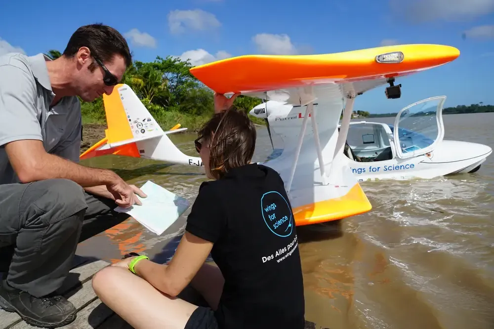
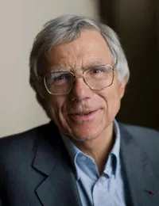
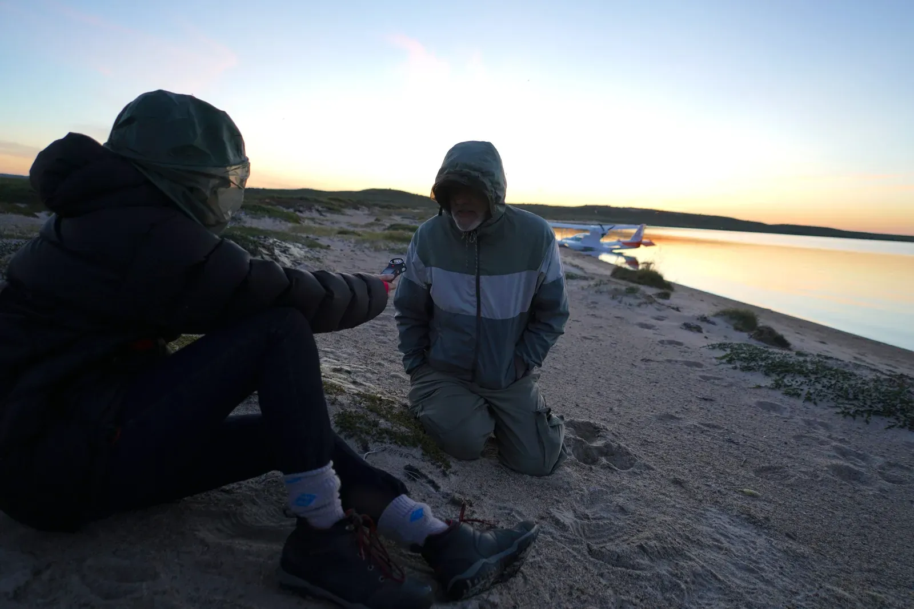

Notre réseau · 01 — Cofondateurs & parrains
Les visages et les forces à l'origine de l'association
Cofondateurs
Les cofondateurs

Cofondatrice et directrice exécutive
Clémentine BACRI
Avocate de formation (barreaux de Paris et de Luxembourg), elle aime partir d'une page blanche pour bâtir des organisations qui comptent. Copilote des expéditions, elle a coécrit les deux livres et donné plus de 100 conférences en quatre langues.
Pendant treize ans, elle a assuré la direction générale de l'association, qu'elle a présidée en alternance avec Adrien Normier : stratégie, pilotage des opérations, partenariats et mécénat. Membre de la Société des Explorateurs Français et de La Guilde.

Cofondateur
Adrien NORMIER
Diplômé en ingénierie aéronautique à Centrale Lyon, il pratique le métier de pilote de ligne. Créatif et passionné par l'aviation, il développe sans cesse de nouvelles solutions techniques. Il pilote tout ce qui vole (sauf les fusées).
Il est en charge de la sélection et de la définition des missions scientifiques, et coordonne tous les sujets techniques et aéronautiques. Membre de la Société des Explorateurs Français et de la Guilde.
Parrains
Nos parrains

Marraine
Claudie HAIGNERÉ
Première femme spationaute européenne dans l'espace, elle est depuis 2010 présidente d'Universcience, l'institution qui regroupe deux centres scientifiques à Paris, la Cité des Sciences et de l'Industrie et le Palais de la Découverte.

Parrain
Pierre LÉNA
Astrophysicien élu à l'Académie des Sciences, ancien Directeur de l'École Supérieure d'Astrophysique d'Île-de-France. Il s'est associé à d'autres physiciens pour créer La main à la Pâte ainsi que l'Office for Climate Education, deux mouvements mondiaux destinés à rénover l'enseignement des sciences et du climat dans les écoles.

Notre réseau · 02